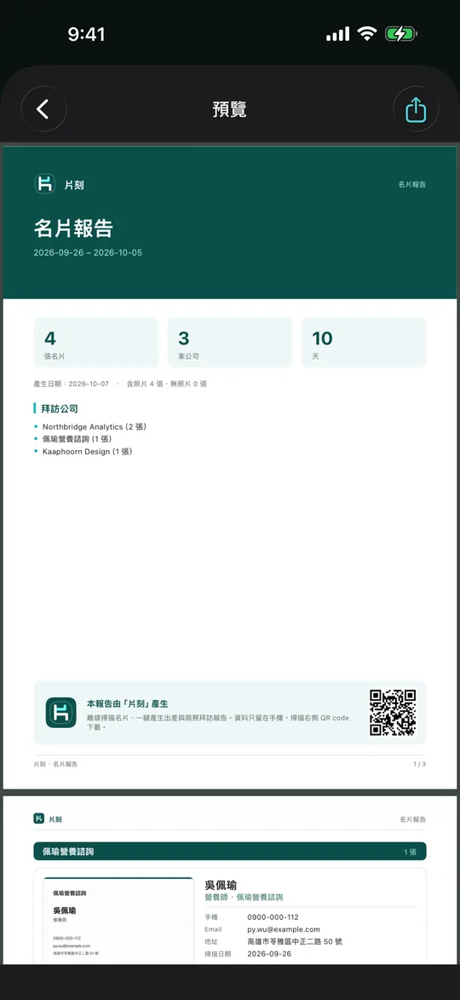

片刻 離線名片不上傳雲端的名片掃描 App
名片拍下來，人脈找得到。
拍照、確認欄位、儲存。把中英文名片變成可搜尋的聯絡人，不需帳號、不上傳。
- 辨識在手機上完成，名片不上傳雲端
- 勾選名片，一鍵產生 PDF＋CSV 拜訪報告
- 不需註冊帳號，Pro 一次買斷、不訂閱
iPhone、Android 都能用，選擇你的手機版本。

出差、展會回來，報告在手機上就做好
免費試用，最多保存 15 張名片
需要更多，再一次買斷 Pro
iPhone／iPad：iOS 17 以上 · Android 8.0 以上
無廣告 · 不訂閱 · 售價以商店顯示為準